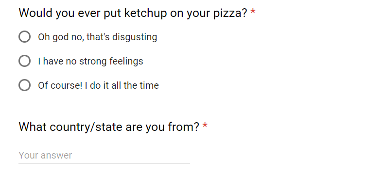
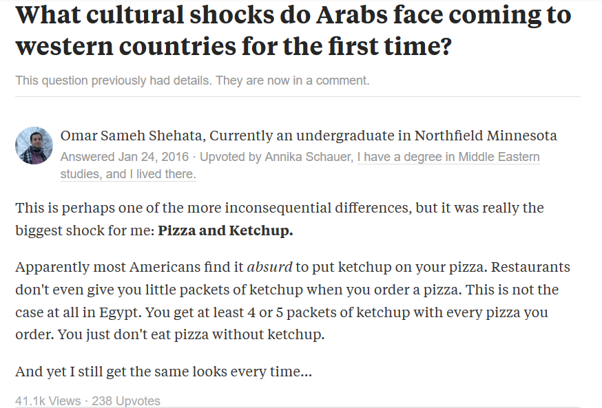
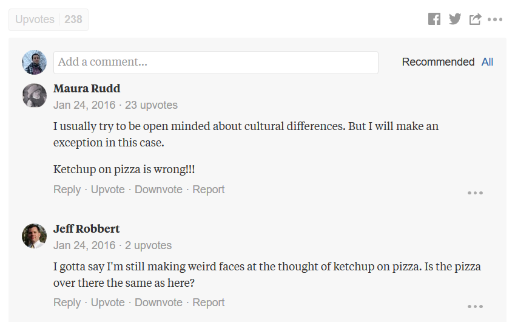
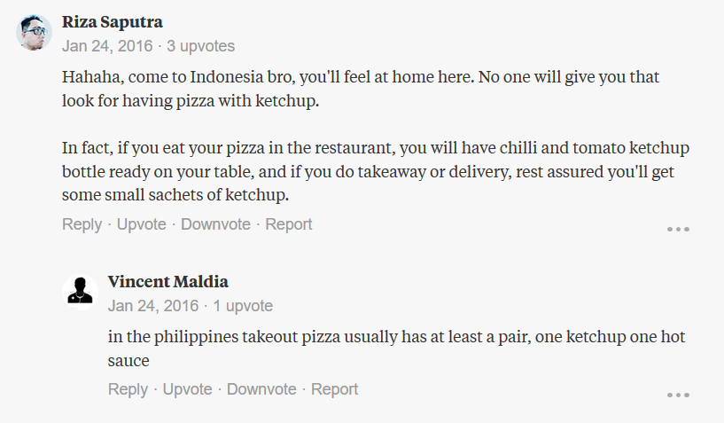
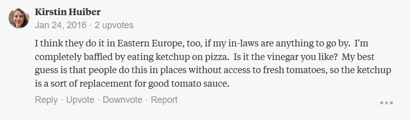

The questions no one cares about, but everyone's wondering
The question was:
and the answer was an overwhelming oh god no. Out of 144 responses, only two people admitted to doing this.
Frankly, I was very disappointed. I expected there to be a lot more people who do this, especially from outside the US. I wanted to know I was not alone.
It matters to me because this was by far my biggest culture shock upon moving to the United States of America.
I grew up in Egypt consuming all forms of media exported from the US. Most of the world is very familiar with the ideals and idiosyncrasies of American culture. I thought I was ready & could easily fit in, but my pizza-dipping-in-ketchup culture quickly exposed me.
In Egypt, putting ketchup on pizza is as natural as putting peanut butter on jelly. They just go together. Every pizza place has a bottle of ketchup at every table. If you order any pizza for delivery, they will include at least a few little packets of ketchup in the box. This isn't just something local restaurants do – Domino's, Pizza Hut & Little Ceasers all do this.
My first shock came when I was over at a friend's house and he ordered some pizza from Domino's. He offered me a slice, and naturally, I start digging in the pizza box for the little packets of ketchup.
There were none. I was horrified.
"Do you have any ketchup around?" I ask, visibly upset at how rude this delivery person was. How could they forget the ketchup? How was I supposed to eat this??
"Uh..no, but there's ranch dressing in the fridge if you want," he calmly replies. This was very strange. Ranch doesn't go with pizza. Ketchup does.
"Uh, no thanks," I reply, thinking how weird this person was. I was totally going to tell everyone this story of this weird guy who offered me ranch dressing on pizza. Needless to say, that did not go well.
The telling of this tale the next day at lunch exposed the full scale of this strange cultural phenonmen. This person wasn't weird for not putting ketchup on their pizza. I was the weird one. I couldn't believe it. I went around asking everyone if they put ketchup on their pizza, firmly believing that the people I spoke to were just a strange minority. The reactions were all something like:
Why would you put ketchup? It already has tomato sauce...
Weird, I've never heard that before. I know some people put ranch on their pizza though.
Oh god why. That's disgusting.
It didn't quite stop there. I asked people who lived off campus. Adults, staff, faculty, anyone who would give me the time of day. I asked people I met in Minneapolis. I was still the weird one.
But perhaps it was just a strange Midwestern thing? Maybe that's why I had never heard of this before?
It didn't quite hit me how prevelant this was until I stumbled on a Quora question that asked what cultural shocks do Arabs face coming to western countries for the first time? I figured it'd be funny to tell my story.
 You can see in the comments Americans expressing how vile and disgusting that sounds. What's more interesting though, is that this wasn't just a thing in Egypt, many other countries like Indonesia and the Philippines did it too!
There was at least one theory about why this was happening:
What I found most interesting wasn't the fact that most Americans found this gross – it was that they'd never heard of this before. I was equally ignorant about this before I moved here. That this was such an unheard of thing, despite our vastly globalized and connected culture, was super fascinating to me.
Which regions of the world put ketchup on their pizza? How did it originate? Is it a generational thing? Is it dying out? These were some the questions I set out to answer.
I set out to find what other countries this was prevalent in (and whether it was common in some states), but I made a pretty big mistake. I asked about people's personal preferences as opposed to asking whether this was a common thing where they're from.
I found out just by happenstance that it is rather common in Poland, but the one Polish person who answered the survey just personally hated it.
That doesn't mean the data is completely useless though. After all, there were two people who did enjoy this! One was from Minnesota and the other from Massachusetts.
Here's the breakdown of the answers for each location (I aggregated all other countries into one because I only got 1 or 2 responses from each).
You can definitely see that while there isn't much love for pizza & ketchup anywhere, a lot more people outside the US feel indifferent about it.
I also noticed google forms automatically records timestamps. So, just for fun, here's when everyone filled out this form throughout the day (98% of responses came in during the first day).
It's rather surprising that almost half the data came in by 8 am. It makes me wonder how different this would look if I had sent it out at a different time.
Looking through the data by hand, it was interesting to see how people wrote down their national identity (some felt they were from both Texas and Minnesota for example).
This was perhaps my favorite:
IL. Also, that's the one of the most vile things I've ever heard. Although, I'd dip my pizza in milk, keep it low key tho.
I think I'll try to have more free-writing questions in future ones.
See you next week!
– Omar